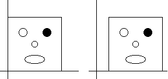
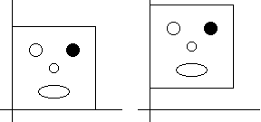

The amount of horizontal translation is denoted by e.
The amount of vertical translation is denoted by f.
|  |
| The figure to the right has been moved .25 units
to the right by taking |
|  |
| The figure to the right has been moved .25 units up by
taking |